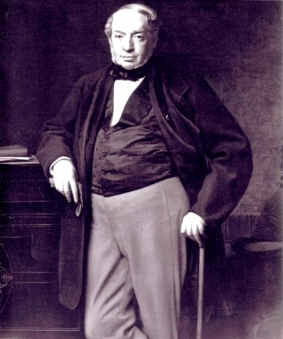
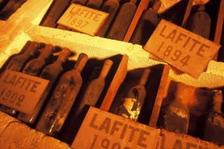
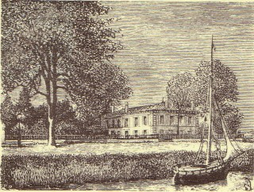
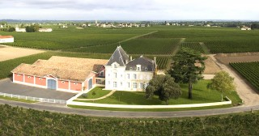
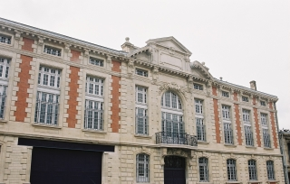
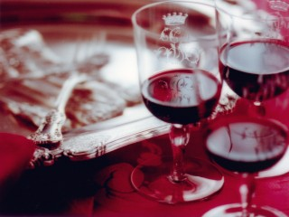

History
-
●1868●
Acquisition of Château Lafite, ranked as a Premier Cru Classé in 1855, by Baron James de Rothschild
 On 8 August 1868, Baron James de Rothschild purchased Château Lafite, which was under public sale as part of the Ignace-Joseph Vanlerberghe succession. Baron James passed died just three months after the purchase, and Lafite became the joint property of his three sons: Alphonse, Gustave and Edmond. The estate then included 74 hectares of vineyards. -
●1900●
Two exceptional vintages in the midst of a troubled period
 The late 1800s and the early 1900s were turbulent. The grapevines suffered both a phylloxeric crisis and mildew. The situation was made worse by organized fraud, which took advantage of the most famous wines, World War I, the Great Depression, and finally France’s occupation during World War II. Special exceptions to this dark period include the vintages of 1899, 1900, and then 1926 and 1929: all of the highest quality. It was during this time that Barons Edouard, Robert, James and Maurice de Rothschild succeeded their fathers at the head of Château Lafite Rothschild. -
●1962●
Acquisition of Château Duhart-Milon, ranked a Pauillac 4th Cru Classé in 1855
 Owned by the Castéja family for more than a century, Château Duhart-Milon suffered from successive inheritances which led to the division of the vineyard and a decline in the wines’ quality. When the Rothschild family purchased it, the property only had 17 hectares of vines. M -
●1984●
Acquisition of Château Rieussec, ranked as a Sauternes Premier Cru Classé in 1855
 Having endured various changes in fortune with a succession of owners over two centuries, Château Rieussec had its ambition to lead the wines of Sauternes restored with its acquisition by DBR (Lafite). To express its potential, rigorous measures were undertaken both in the vineyard and in the winery, with meticulous selection, construction of a new barrel room, and more renovation work in 2000 in an ongoing quest to improve quality. -
●2001●
Premises in Bordeaux
 The vat room and the cellar were completely rebuilt to be more suited to plot selection. The grapes from each plot can be separated in small batches so that its suitability for inclusion in the Grand Vin can be assessed after fermentation. Once fermentation has finished, the wine is placed in oak barrels in the underground barrel-ageing cellar where it is aged for 18 months. Particular care was given to the aesthetic aspects with strong exterior colours and contrasting dark colours inside which lend an intimate style to the beautiful circular cellar.
-
●1870●
A remarkable vintage during the "golden age" of the Médoc
 1868 left a rich legacy of remarkable vintages, particularly 1869, 1870, 1874, 1875, and 1878. Fortunately for Barons Alphonse, Gustave, and Edmond de Rothschild, the “golden age” of Médoc, heralded by the 1855 classification, continued for another fifteen years after the acquisition of Château Lafite.
1868 left a rich legacy of remarkable vintages, particularly 1869, 1870, 1874, 1875, and 1878. Fortunately for Barons Alphonse, Gustave, and Edmond de Rothschild, the “golden age” of Médoc, heralded by the 1855 classification, continued for another fifteen years after the acquisition of Château Lafite.
-
●1946●
The Rothschild family entrusts Château Lafite to Baron Elie de Rothschild
A new generation of Rothschilds inherited Château Lafite Rothschild: Barons Guy, Alain, Elie, and Edmond. After the difficult decades following the turn of the century, and the painful period of World War II, Baron Elie de Rothschild was entrusted with the recovery of the Estate. Vintages 1947 and 1949 were rays of hope amid the labours of renewal, although the Bordeaux vines suffered from frost again in February 1956. Nonetheless, the recovery went on and gave rise to a new era, heralded by the exceptional vintages 1959 and 1961. -
●1974●
Baron Eric de Rothschild takes charge of Domaines Barons de Rothschild
The fifth generation of the Rothschilds to manage Lafite, Baron Eric, nephew, has been active in his quest for excellence. He extended DBR (Lafite)’s expertise to new properties with the restoration of some exceptional estates and châteaus. The changeover was hailed by several fabulous vintages, notably 1975, 1976, and 1982. Baron Eric was part of the fifth Rothschild generation to inherit Château Lafite, along with Barons David, Edouard, Robert, Nathaniel and Benjamin de Rothschild. -
●1995●
Development of the Collection
 In 1995 DBR (Lafite) began producing Bordeaux wines by selecting the region’s most representative appellations: Bordeaux, Médoc and Pauillac. In a continuation of the “Réserves des Barons” tradition, the Collection is presented under the Saga, Légende and Réserves brands with a view to offering wines with immediate charm -
●2008●
A vineyard in Penglai, China
In 2008 Domaines Barons de Rothschild (Lafite) joined forces with the national Chinese group CITIC with a view to creating a vineyard in China. Of all the Chinese regions that were studied, the Shandong peninsula proved to be the most promising for the production of fine wines both from the point of view of climate and geology. This region already has a long wine-producing tradition, and a vineyard was planted on high quality sloping ground. The Shandong region is about forty minutes south of Penglai, and the vineyard is in the heart of a protected area of 377 hectares.